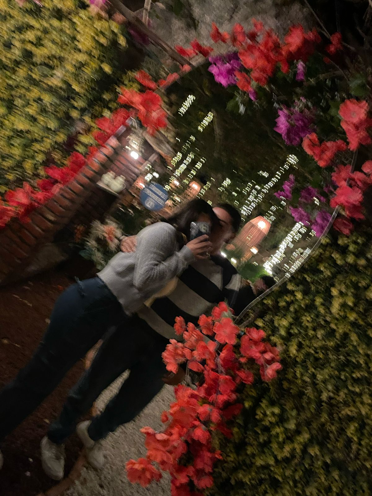
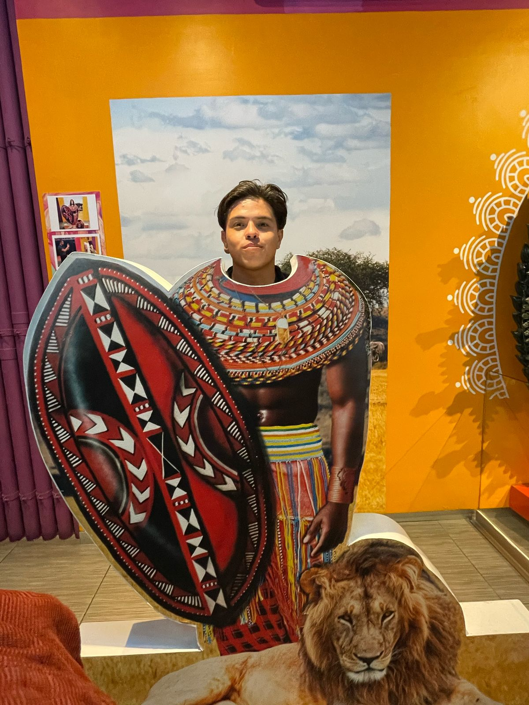
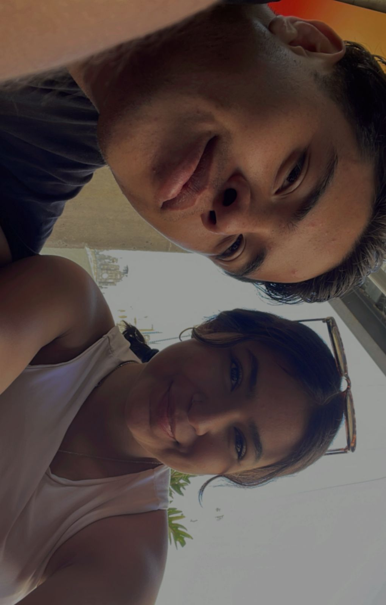

Todo comenzó con un juego de letras y sonrisas. Un "C-I-O-S-A" que desencadenó un sinfín de emociones. Vimos una película juntos y compartiemos comentarios como si ya nos conocieramos de toda la vida. Yo prometi que cada semana escribiría un capítulo de nuestra historia de amor, y tu lo recibiste con una ternura que se sintió como hogar. Fue una semana que comenzó con timidez, pero terminó con fuegos artificiales invisibles. Entre bromas de letras mezcladas y películas compartidas a distancia, Tu y yo empezamos a dibujar los primeros trazos de una historia sincera. Yo cuidaba cada palabra; tu reías como si ya supieras que vendría algo especial. Nos escuchabamos, nos entendíamos… y aunque la distancia estaba ahí, la conexión emocional lo cubría todo. Juegos de muecas, divertidisimo por cierto, noches magicas con tu compañia corazon, y eso no es todo, escribimos una historia juntos, donde tu eras una princesa rescatada por un plebello como yo, recuerdas amor? Esta semana tuvimos el primer bache, logramos unificar la historia, una noticia nublo el panorama sin embargo no nos detuvo, seguimos de pie y defendimos nuestros sentimientos, tuvimos una cita en un restaurante bonito, fuimos juntos y sonreimos, fingimos demencia y nos amamos mutuamente.
Momentos que derriten:
"Te haré un resumen cada semana, de todo lo lindo que es esto contigo."
“Mejor escribiré mi propia película, a mi manera…”
“No te preocupes, aquí estaré… siempre.”


